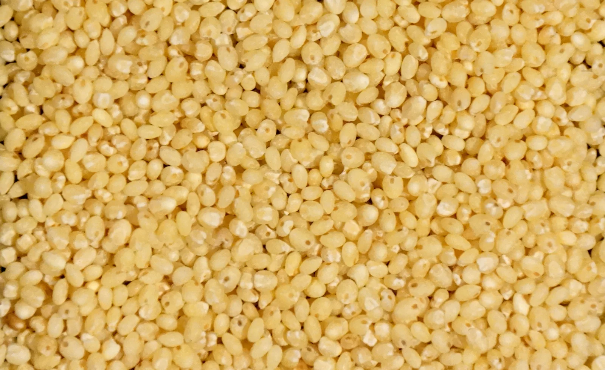

Products
Millet Zone millets : unpolished, high fibre & low glycemic index food grains
Foxtail millet
Browntop millet
Barnyard millet
Kodo millet
Little millet

LITTLE MILLET
Common Name: Samelu Biyyam/ Rice
(Kutki)
Carbohydrates: 65.5g Niacin: 1.5mg
Protein: 7.7g Riboflavin: 0.07mg
Fiber: 9.8g Thiamine: 0.30mg
OTHER BENEFITS :
Millet Zone brings you the 'Siri Dhanya' that can surely help issues related to ductless glands and reproductive systems.
Best for Pancreas, Thyroid. While it helps to corrects ovary related issues in women, it improves the reproductive strength in men. It also corrects menstrual disorders and also helps in PCOD and other gynaec problems.

FOXTAIL MILLET
Common Name: Korralu Biyyam/ Rice
(Kangni)
Carbohydrates: 60.6g Niacin: 0.7mg
Protein: 12.3g Riboflavin: 0.11mg
Fiber: 8.0g Thiamine: 0.59mg
OTHER BENEFITS :
Millet Zone brings you the 'Siri Dhanya' helps the Brain, spine, nervous system, joints and skeletal system. Best food for pregnant women and ensures a healthy baby. But during lactation Foxtail may not be very useful.
It helps in rejuvenating the nervous and vascular systems, it helps in curing epilepsy, bed wetting in children. Also in Neuropathy and Parkinsons. Spread in Africa and Asia.

BROWNTOP MILLET
Common Name: Andu Korralu Biyyam/ Rice
Carbohydrates: 69.7g Niacin: 18.5mg
Protein: 11.5g Riboflavin: 0.027mg
Fiber: 12.5g (Highest of all Millets) Thiamine: 3.2mg
OTHER BENEFITS :
Millet Zone brings you the 'Siri Dhanya' that helps in digestive, brain, spine & other skeletal systems.
It helps detoxify entire body systems. Its cleanses the entire digestive tract and can solve the ailments of gastritis, constipation ,haemorrhoids and all other GI and rectal problems. It also helps in cleansing the body of metabolic waste.Highly recommended in various cancers too.
Also known as Green Millet.

KODO MILLET
Common Name: Arikalu Biyyam/ Rice
(Kodra)
Carbohydrates: 65.6 g Niacin: 2.0 mg
Protein: 6.2 g Riboflavin: 0.09 mg
Fiber: 9.0 g Thiamine: 0.33 mg
OTHER BENEFITS :
Millet Zone brings you the 'Siri Dhanya' that is pinkish brown in color and helps in purification of blood and even fights Gangrene.(Ideal for cleanup after Malaria, viral, Dengue and septic fevers)
Cleans up bone marrow, helps in normalising quality of blood. Excellent for people affected by gangrene and bacterial fevers too. It helps in regenerating cells in the bone marrow.
Grows in Himalayan foot hills and written about in sacred YAJURVEDA texts.

BARNYARD MILLET
Common Name: Oodhalu Biyyam/ Rice
(Jhangora)
Carbohydrates: 65.5 g Niacin: 1.5 mg
Protein: 6.2 g Riboflavin: 0.08 mg
Fiber: 9.8 g Thiamine: 0.31 mg
OTHER BENEFITS :
Millet Zone brings you the 'Siri Dhanya' helps cleansing endocrine organs and soft organs like, liver, gall bladder and kidney.
Its fiber content helps in increasing the efficiency of ductless glands such as pancreas, thyroid etc. Best food for patients of Jaundice, thyroid and Kidney stones.
Also known as the Japanese millet, grown widely in Uttaranchal, India & used to grow abundantly in the valleys of the Japanese mountains

PROSO MILLET
Common Name: Warigalu Biyyam/ Rice
(Barri)
Carbohydrates: 68.9 g Niacin: 2.3 mg
Protein: 12.5 g Riboflavin: 0.18 mg
Fiber: 2.2 g Thiamine: 0.20 mg
OTHER BENEFITS :
This 'Siri Dhanya' is suitable food for little children(Make broth from grains) and adults to help gain weight and better nutrition.
Content captured 25 October 2026. Reorganized for reading; purchase-related material excluded.